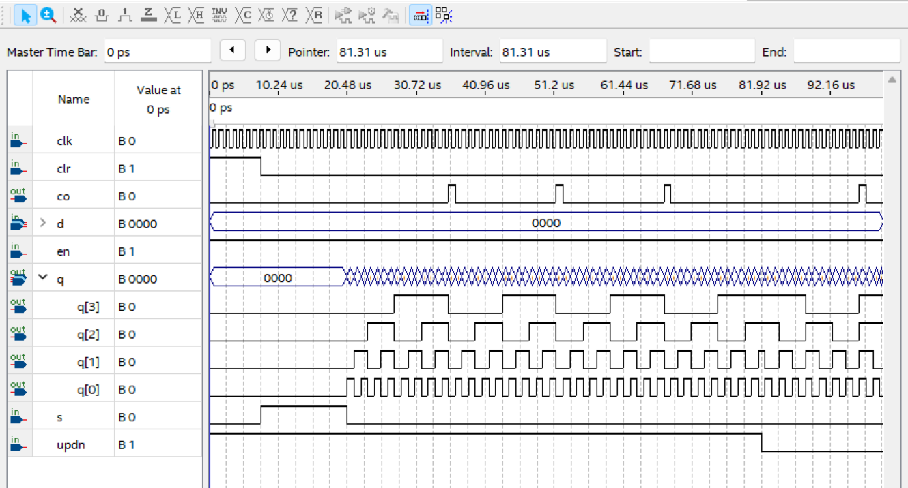
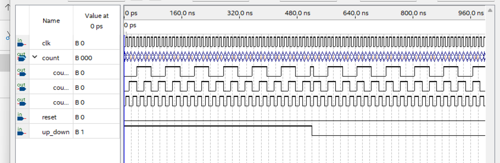
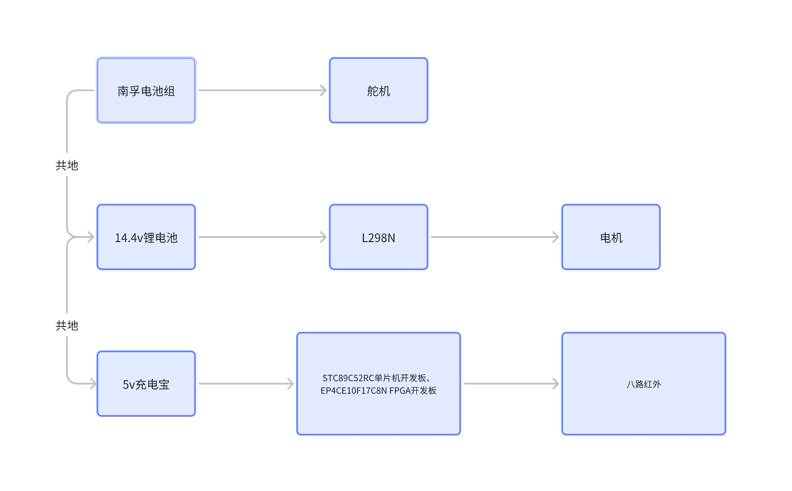
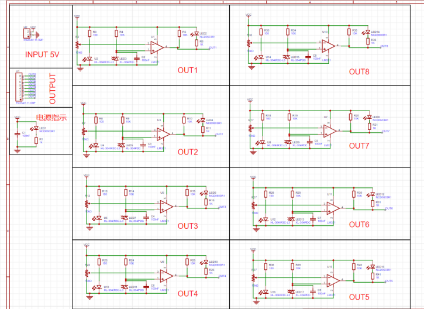
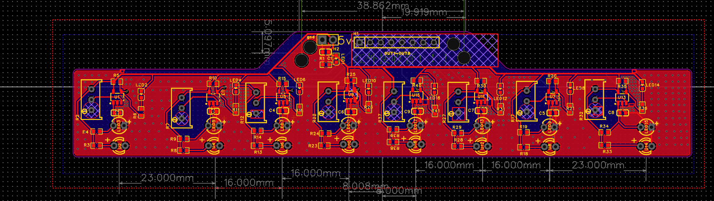
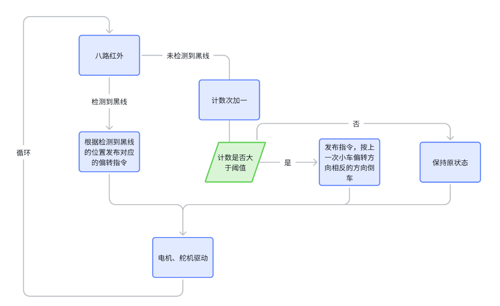
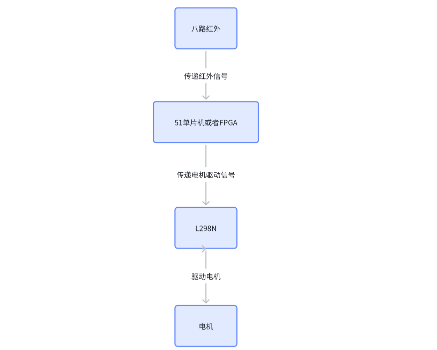

VHDL数字逻辑电路设计
项目概况
| 项目类型 | 工程原理课程设计 |
| 技术栈 | VHDL, Quartus, ModelSim, Multisim, Altium Designer |
| 内容 | 8个数字电路模块 + 流水灯 + 直流电源 + 循迹小车 |
1 核心VHDL模块实现
1.1 四位同步二进制可逆计数器
支持异步清零、并行加载、上升/下降计数、进位输出四种功能：
四位同步可逆计数器完整实现（test31.vhd）
library IEEE;
use IEEE.STD_LOGIC_1164.ALL;
use IEEE.STD_LOGIC_UNSIGNED.ALL;
entity test31 is
Port (
clk : in STD_LOGIC;
clr : in STD_LOGIC; -- 异步清零 (高有效)
s : in STD_LOGIC; -- 并行加载使能
en : in STD_LOGIC; -- 计数使能
updn : in STD_LOGIC; -- 1=上计数, 0=下计数
d : in STD_LOGIC_VECTOR(3 downto 0);
co : out STD_LOGIC; -- 进位/借位输出
q : buffer STD_LOGIC_VECTOR(3 downto 0)
);
end test31;
architecture Behavioral of test31 is
begin
process(clk, clr)
begin
if clr = '1' then
q <= "0000"; -- 异步清零
elsif rising_edge(clk) then
if s = '1' then
q <= d; -- 并行加载
elsif en = '1' then
if updn = '1' then
q <= q + 1; -- 上升计数
else
q <= q - 1; -- 下降计数
end if;
end if;
end if;
end process;
-- 进位输出: 上计数到1111或下计数到0000时置1
co <= '1' when (updn='1' and q="1111" and en='1')
or (updn='0' and q="0000" and en='1')
else '0';
end Behavioral;
1.2 四位双向移位寄存器
四位双向移位寄存器（shift\4.vhd）
entity shift_4 is
Port (
clk : in STD_LOGIC;
reset : in STD_LOGIC;
shift_left : in STD_LOGIC;
shift_right : in STD_LOGIC;
data_in : in STD_LOGIC_VECTOR(3 downto 0);
data_out : out STD_LOGIC_VECTOR(3 downto 0)
);
end shift_4;
architecture Behavioral of shift_4 is
signal reg : STD_LOGIC_VECTOR(3 downto 0);
begin
process(clk, reset)
begin
if reset = '1' then
reg <= "0000";
elsif rising_edge(clk) then
if shift_left = '1' then
-- 循环左移: 最高位移到最低位
reg <= reg(2 downto 0) & reg(3);
elsif shift_right = '1' then
-- 循环右移: 最低位移到最高位
reg <= reg(0) & reg(3 downto 1);
else
reg <= data_in; -- 并行加载
end if;
end if;
end process;
data_out <= reg;
end Behavioral;
1.3 同步八进制可逆计数器
同步八进制可逆计数器（counter.vhd）
entity counter is
Port (
clk : in STD_LOGIC;
reset : in STD_LOGIC;
up_down : in STD_LOGIC; -- 1=加法, 0=减法
count : out STD_LOGIC_VECTOR(2 downto 0)
);
end counter;
architecture Behavioral of counter is
signal cnt : STD_LOGIC_VECTOR(2 downto 0) := "000";
begin
process(clk, reset)
begin
if reset = '1' then
cnt <= "000";
elsif rising_edge(clk) then
if up_down = '1' then
if cnt = "111" then cnt <= "000"; -- 7->0 循环
else cnt <= cnt + 1;
end if;
else
if cnt = "000" then cnt <= "111"; -- 0->7 循环
else cnt <= cnt - 1;
end if;
end if;
end if;
end process;
count <= cnt;
end Behavioral;
2 五种触发器实现
| 序号 | 触发器类型 | 触发方式 | 核心行为 |
|---|---|---|---|
| 1 | 边沿触发D触发器 | 时钟上升沿 | Q ← D |
| 2 | 电平触发D触发器 | 时钟高电平 | 透明传输D→ Q |
| 3 | JK触发器 | 时钟上升沿 | J=K=1时Q翻转 |
| 4 | SR触发器 | 时钟上升沿 | S=1置位, R=1复位 |
| 5 | T触发器 | 时钟上升沿 | T=1时Q翻转 |
每种触发器均通过ModelSim进行完整功能仿真验证，生成时序波形图确认逻辑正确性。

四位可逆计数器仿真波形

八进制计数器仿真波形

四位移位寄存器仿真波形

D触发器仿真波形
3 延伸项目：FPGA自动循迹小车
将数字逻辑设计延伸至实际工程应用——基于FPGA的自动循迹小车。系统采用三路独立供电架构，支持51单片机与FPGA双控制核心切换。
3.1 系统架构与供电设计
系统分为三路独立供电通道（共地连接），各模块功能互不干扰：

Fig. 5 循迹小车系统供电与信号流框图
| 供电通道 | 电源 | 驱动对象 | 功能 |
|---|---|---|---|
| 通道1 | 南孚电池组 | 舵机 | 转向控制 |
| 通道2 | 14.4V锂电池 | L298N → 电机 | 驱动行进 |
| 通道3 | 5V充电宝 | STC89C52RC / EP4CE10F17C8N FPGA | 逻辑控制+红外采集 |
3.2 自研8路红外传感器模块
采用Altium Designer设计8路红外传感器PCB，每路采用反射式红外对管+ LM393比较器构成独立检测通道，可独立调节检测阈值。板载8路LED实时指示各通道检测状态。

8路红外传感器模块原理图

8路红外传感器PCB布局
3.3 循迹算法与丢线恢复策略
循迹算法核心为8路红外加权中心法：根据各传感器位置赋予加权系数，计算黑线偏移量，生成差速转向信号。当所有传感器均未检测到黑线时，进入丢线恢复模式——累计丢线次数，若超过阈值则按上次偏转方向反向倒车搜索，否则保持原状态等待重新捕获。

Fig. 8 循迹算法流程图（含丢线恢复策略）
3.4 电机驱动模块
电机驱动模块同样为自研PCB，采用A4950双H桥驱动芯片，支持正转/反转/刹车/滑行四种工作模式。通过FPGA输出的PWM信号控制电机转速，实现差速转向。

Fig. 9 L298N电机驱动真值表
4 配套设计
- 硬件流水灯：Multisim仿真，555定时器+CD4017十进制计数器级联，实现8路LED顺序点亮
- 直流稳压电源：Multisim设计，变压→整流→滤波→稳压（7805），输出5V/1A稳定直流